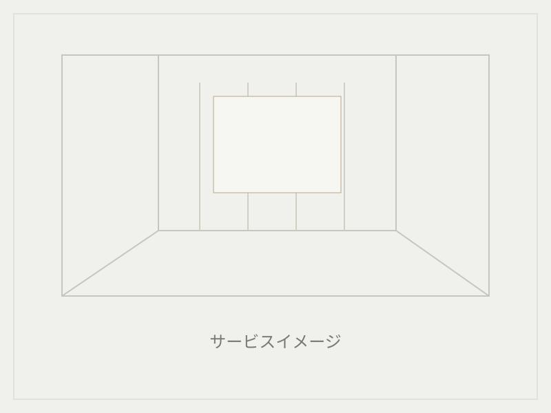
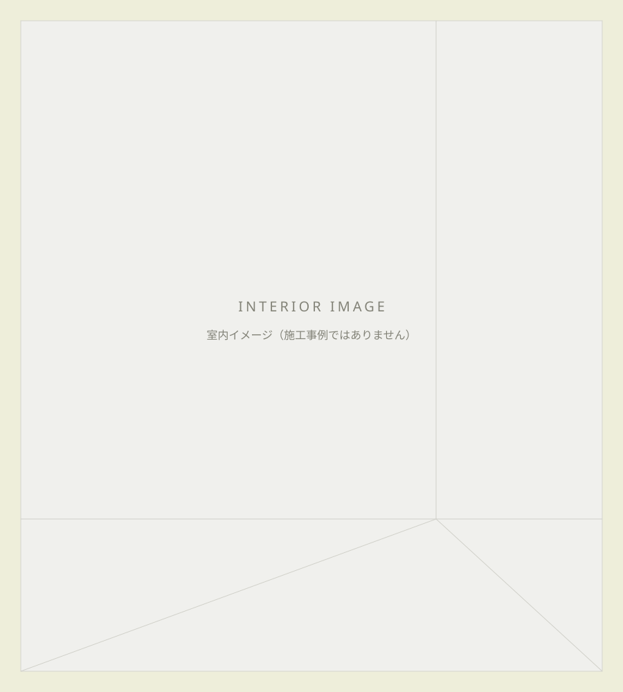
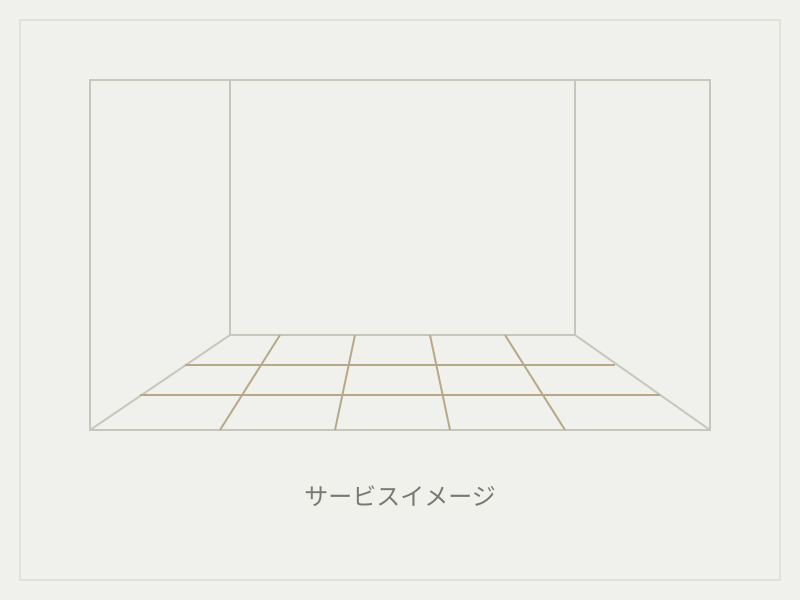
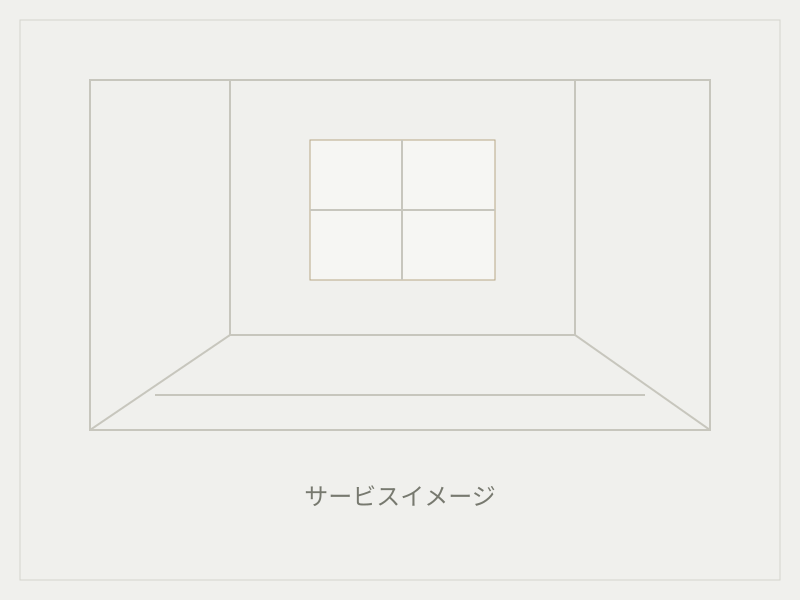

東京都板橋区から、住まいを整える。
クロス張替え・
原状回復・内装補修
住まいの安心を、月のように。
東京23区を中心に、埼玉・千葉・神奈川も工事内容・規模に応じて対応。
LINE窓口は準備中です。

月輪が選ばれる理由
材工込み
材料費・施工費を含めた、わかりやすいお見積り。
不明瞭な諸経費・手数料なし
追加作業が必要な場合は、事前にご説明します。
法人・管理会社対応
大口・継続案件も柔軟に対応。
サービス案内
壁・床の張替えから、部分補修、退去後の工事まで。


施工事例
実際の施工写真と詳細は、掲載準備中です。
料金について
個人のお客様
クロス張替え（材工込み）
参考価格
1,400円/m～
施工面積・施工内容により料金は異なります。
正式な料金はお見積りにてご案内します。
材料費・施工費込み不明瞭な諸経費・手数料なし
必要な追加作業がある場合は、事前に説明・確認します。
対応物件・対応エリア
住まいと管理物件の内装に
- マンション
- アパート
- 戸建て
- ホテル
- 民泊
- 管理物件
東京23区を中心に対応
埼玉・千葉・神奈川も、工事内容・規模に応じて対応します。
施工場所とご希望の内容をお知らせください。
写真からはじめるご相談
写真をLINEで送って
かんたん相談
施工箇所の写真をお送りいただければ、内容確認やお見積りのご案内がスムーズです。
LINEで写真を送る
LINE窓口は準備中です。
現在は電話・メールでご相談いただけます。
ご依頼の流れ
- 01
お問い合わせ
電話・LINE・メールからご相談。
- 02
現地確認・お見積り
施工内容を確認し、ご案内します。
- 03
日程調整
ご都合と施工条件を確認します。
- 04
施工
お見積り内容に沿って施工します。
- 05
完了・ご確認
仕上がりをご確認いただきます。
よくある質問
見積りは無料ですか？
お見積りは無料です。施工場所とご希望の内容をお知らせください。
写真だけでも相談できますか？
写真からもご相談いただけます。施工箇所の写真をお送りください。正式な料金は施工内容を確認し、お見積りにてご案内します。LINE窓口は準備中のため、現在はメールに写真を添付してお送りください。
対応エリアはどこですか？
東京23区を中心に、埼玉・千葉・神奈川も工事内容・規模に応じて対応します。施工場所をお知らせください。
法人・管理会社の継続案件も対応できますか？
大口・継続案件も柔軟に対応します。施工量・件数・施工条件に応じて個別にお見積りします。
料金に材料費・施工費は含まれていますか？
クロス張替えの参考価格は材工込みです。材料費・施工費を含めた、わかりやすいお見積りをご案内します。
追加費用が発生する場合はありますか？
必要な追加作業がある場合は、事前に説明・確認します。不明瞭な諸経費・手数料はありません。
お問い合わせ
ご相談・無料見積りはこちらから。